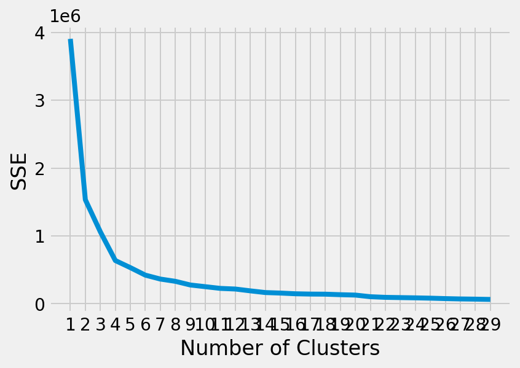

from selenium import webdriver
from bs4 import BeautifulSoup
import pandas as pd
import socket
import io
import shutil
import re
import urllib.request
import os
import errno
import urllib.request
import xlsxwriter
import time
import pandas
import numpy
import matplotlib.pyplot as plt
from kneed import KneeLocator
from sklearn.datasets import make_blobs
from sklearn.cluster import KMeans
from sklearn.metrics import silhouette_score
from sklearn.preprocessing import StandardScaler
driver = webdriver.Chrome(r"C:\Users\EMRE\Documents\GitHub\mef06-cakmakem\ScrapingFiles\chromedriver.exe")
driver.get("https://www.jpg.store/collection/pavia?minPrice=300000000&maxPrice=1000000000")
SCROLL_PAUSE_TIME = 0.8
# Get scroll height
last_height = driver.execute_script("return document.body.scrollHeight")
a=0
n=5
while a<n:
# Scroll down to bottom
driver.execute_script("window.scrollTo(0, document.body.scrollHeight);")
# Wait to load page
time.sleep(SCROLL_PAUSE_TIME)
# Calculate new scroll height and compare with last scroll height
new_height = driver.execute_script("return document.body.scrollHeight")
if new_height == last_height:
break
last_height = new_height
a+=1
itemset = []
priceset=[]
content = driver.page_source
soup = BeautifulSoup(content)
for a in soup.find_all('div', attrs = {'class', 'styles_itemsGrid__J7c4P grid'}):
children = a.findChildren("span", recursive=False)
for child in children:
sublings = child.find_all('div', attrs = {'class', 'NFTMarketplaceCard_nftMarketplaceCardContent__I5fdd'})
pricesclass = child.find_all('div', attrs = {'class', 'NFTMarketplaceCard_nftMarketplaceCardPriceContainer__a3CBp'})
for items in sublings:
a=items.findChildren("h4",recursive=False)
#.find_all('h4', attrs = {'id', 'asset-title'})
#for i in a.contents:
itemset.append(a[0])
for price in pricesclass:
b=price.findChildren("div", recursive=False)
for c in b:
d=c.findChildren("span",recursive=False)
priceset.append(d[0])
df = pd.DataFrame(itemset, columns=["names"])
df_p = pd.DataFrame(priceset, columns=['price'])
df_final = pd.concat([df,df_p],axis=1)
## df_final.to_excel('20102022_2_nft.xlsx', encoding='utf-16',engine='xlsxwriter')
df_final[['name','space','X','Y']]=df_final.names.str.split(' ',3,expand=True)
df_final=df_final[['X','Y','price']]
df_final=df_final[(df_final['X']!='-')&(df_final['Y']!='-')&(df_final['X']!='')&(df_final['Y']!='')&(df_final['X']!=' ')&(df_final['Y']!=' ')]
df_final['X']=pd.to_numeric(df_final['X'],downcast='integer')
df_final['Y']=pd.to_numeric(df_final['Y'],downcast='integer')
df_final['distance_to_origin']=(abs((df_final['X'])**2 + (df_final['Y']**2)))**0.5
kmeans_kwargs = {
"init": "random",
"n_init": 10,
"max_iter": 300,
"random_state": 42,
}
# # A list holds the SSE values for each k
sse = []
for k in range(1, 30):
kmeans = KMeans(n_clusters=k, **kmeans_kwargs)
kmeans.fit(df_final[['X','Y','distance_to_origin']])
sse.append(kmeans.inertia_)
plt.style.use("fivethirtyeight")
plt.plot(range(1, 30), sse)
plt.xticks(range(1, 30))
plt.xlabel("Number of Clusters")
plt.ylabel("SSE")
plt.show()
##print('specify number of clusters')
##k=int(input())
k=10
kmeans = KMeans(n_clusters=k, **kmeans_kwargs)
df_final['cluster']=kmeans.fit_predict(df_final[['X','Y','distance_to_origin']])
df_final['cluster'] = df_final['cluster'].astype('category')
results = df_final.groupby('cluster').agg({'price':['mean','std']})
results=results.reset_index()
results.columns=['cluster','mean','std']
df_final=df_final.merge(results,left_on='cluster',right_on='cluster')
df_final['low_limit']=df_final['mean']-1.5*df_final['std']
df_final['d_p_rate'] = df_final['distance_to_origin']/df_final['price'].astype(float)
results_dp = df_final.groupby('cluster').agg({'d_p_rate':['mean','std']})
results_dp=results_dp.reset_index()
results_dp.columns=['cluster','mean_dp','std_dp']
df_final=df_final.merge(results_dp,left_on='cluster',right_on='cluster')
df_final['low_limit_dp']=df_final['mean_dp']-1.5*df_final['std_dp']
finalists=df_final[(df_final['price'].astype(float)<df_final['low_limit'])&(df_final['d_p_rate']<df_final['mean_dp'])]
finalists[1:10]C:\Users\EMRE\AppData\Local\Temp\ipykernel_10644\1984115952.py:27: DeprecationWarning: executable_path has been deprecated, please pass in a Service object
driver = webdriver.Chrome(r"C:\Users\EMRE\Documents\GitHub\mef06-cakmakem\ScrapingFiles\chromedriver.exe")
| X | Y | price | distance_to_origin | cluster | mean | std | low_limit | d_p_rate | mean_dp | std_dp | low_limit_dp | |
|---|---|---|---|---|---|---|---|---|---|---|---|---|
| 4 | -176 | 124 | 300 | 138.506318 | 6 | 1.048475e+55 | 49.327762 | 1.048475e+55 | 0.461688 | 0.510455 | 0.118085 | 0.333327 |
| 5 | -204 | 60 | 300 | 142.548237 | 6 | 1.048475e+55 | 49.327762 | 1.048475e+55 | 0.475161 | 0.510455 | 0.118085 | 0.333327 |
| 11 | -238 | 131 | 320 | 90.934042 | 6 | 1.048475e+55 | 49.327762 | 1.048475e+55 | 0.284169 | 0.510455 | 0.118085 | 0.333327 |
| 12 | -194 | 74 | 324 | 149.746452 | 6 | 1.048475e+55 | 49.327762 | 1.048475e+55 | 0.462180 | 0.510455 | 0.118085 | 0.333327 |
| 13 | -198 | 84 | 333 | 138.838035 | 6 | 1.048475e+55 | 49.327762 | 1.048475e+55 | 0.416931 | 0.510455 | 0.118085 | 0.333327 |
| 14 | -197 | 82 | 333 | 141.431962 | 6 | 1.048475e+55 | 49.327762 | 1.048475e+55 | 0.424721 | 0.510455 | 0.118085 | 0.333327 |
| 15 | -185 | 129 | 333 | 121.119775 | 6 | 1.048475e+55 | 49.327762 | 1.048475e+55 | 0.363723 | 0.510455 | 0.118085 | 0.333327 |
| 17 | -196 | 46 | 344 | 158.126532 | 6 | 1.048475e+55 | 49.327762 | 1.048475e+55 | 0.459670 | 0.510455 | 0.118085 | 0.333327 |
| 25 | -224 | -11 | 300 | 123.446345 | 5 | 7.968328e+72 | 51.917659 | 7.968328e+72 | 0.411488 | 0.517249 | 0.129786 | 0.322569 |